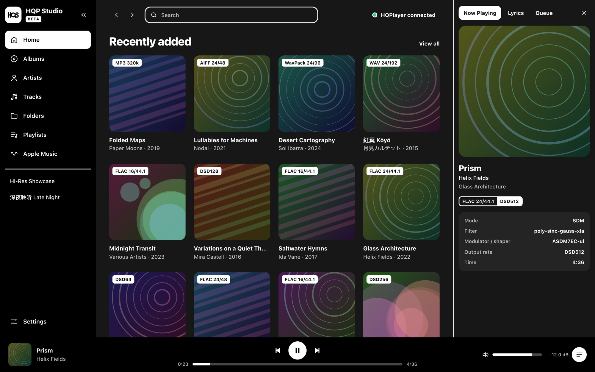
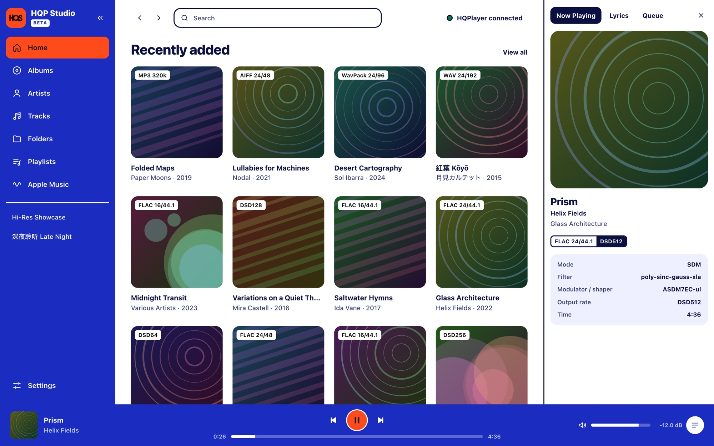
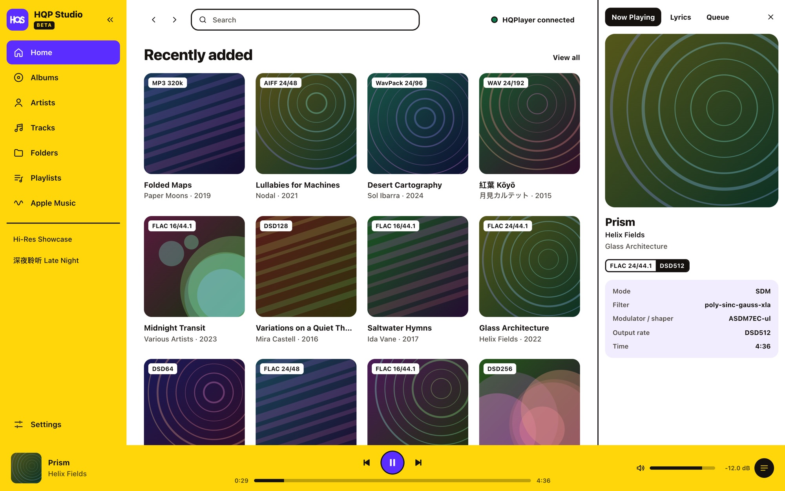
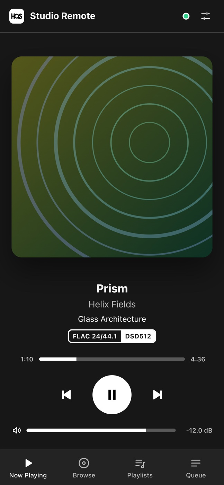

Your music library. HQPlayer's sound. 你的音乐库，HQPlayer 的声音。
HQP Studio is a modern library, playlist manager and phone remote for HQPlayer. Browse albums, build a queue and control playback — HQPlayer still does all the decoding, DSP, upsampling and DAC output. HQP Studio 是 HQPlayer 的现代音乐库、播放列表和手机遥控器。浏览专辑、排好队列、控制播放 —— 解码、DSP、升频和 DAC 输出仍然全部由 HQPlayer 完成。

Studio drives. HQPlayer plays.Studio 负责操作，HQPlayer 负责声音。
Studio never sits in the audio path. It talks to HQPlayer on this PC over its official control interface — the same way HQPlayer's own remotes do — and only uses commands that were verified on HQPlayer 6. Studio 从不插入音频链路。它通过 HQPlayer 官方的控制接口与本机的 HQPlayer 通信（和 HQPlayer 自己的遥控器一样），并且只使用在 HQPlayer 6 上验证过的命令。
HQP StudioHQP Studio
Library, search, playlists, queue, lyrics, phone remote音乐库、搜索、播放列表、队列、歌词、手机遥控
HQPlayer Desktop 6
Decoding, filters, modulators, PCM → DSD512, CUDA解码、滤波器、调制器、PCM → DSD512、CUDA
Your DAC你的 DAC
Untouched: the output device and settings stay HQPlayer's不受影响：输出设备和设置始终归 HQPlayer 管
Everything HQPlayer's window doesn't doHQPlayer 窗口里没有的，这里都有
A real library for big collections on local disks, USB drives and NAS shares.为本地硬盘、USB 盘和 NAS 上的大型音乐收藏准备的真正的音乐库。
Albums, artists, folders专辑、艺术家、文件夹
Covers, multi-disc sets, compilations, Chinese and Japanese titles, format badges from MP3 to DSD256. Search with Ctrl + K.封面、多碟、合辑、中日文标题，从 MP3 到 DSD256 的格式标签。按 Ctrl + K 搜索。
Queue and playlists队列与播放列表
Play next, add to queue, drag to reorder. Saved playlists stay separate from the queue, so playing never edits them.下一首播放、加入队列、拖动排序。保存的播放列表和队列分开，播放不会改动它们。
Phone and iPad remote手机 / iPad 遥控
Open it in the phone's browser on your home Wi-Fi, pair with a 6-digit code. No app to install.在家里 Wi-Fi 下用手机浏览器打开，输入 6 位配对码即可。不用装 App。
DSP presets and EQDSP 预设与 EQ
Optional: switch mode, filters, modulator and rate from Studio, save presets, and shape an EQ that HQPlayer's own convolution plays.可选：在 Studio 里切换模式、滤波器、调制器和采样率，保存预设；画一条 EQ 曲线，由 HQPlayer 自己的卷积引擎处理。
Synced lyrics同步歌词
Local .lrc and embedded lyrics first. Online sources (LRCLIB, NetEase, Kugou, lyrics.ovh) only if you turn them on.优先使用本地 .lrc 和内嵌歌词。在线来源（LRCLIB、网易云、酷狗、lyrics.ovh）只有你开启后才使用。
Mini Player, media keys, tray迷你播放器、媒体键、托盘
A small always-on-top player, keyboard media keys and a tray icon. Eight colour themes.可置顶的小窗播放器、键盘媒体键和托盘图标。八种配色主题。
Play an album. Studio does the rest.点播放，剩下的交给 Studio。
Double-click an album and Studio loads it into HQPlayer and starts it. The queue on the right is always in sync with what HQPlayer is playing.双击一张专辑，Studio 就把它放进 HQPlayer 并开始播放。右侧的队列始终与 HQPlayer 正在播放的内容同步。
- Never overwrites silently. If someone changes tracks in HQPlayer's own window, Studio asks whether to follow HQPlayer or replace its queue.从不静默覆盖。如果有人在 HQPlayer 自己的窗口里换了歌，Studio 会问你是跟随 HQPlayer 还是替换它的队列。
- No surprises after a reconnect. Studio reads the state again; it never starts playback or changes volume or DSP on its own.重连后不乱动。Studio 只重新读取状态，不会自己开始播放，也不会改音量或 DSP。
- Scans only read. Nothing is moved, renamed, retagged or deleted. A NAS that is off just shows its albums as unavailable.扫描只读。不移动、不改名、不改标签、不删除。NAS 关机时它的专辑只会标成“不可用”。

Make it yours换个颜色
Dark, Light, Cobalt, Citrus, Poppy, Pine, Plum and Ocean — flat, solid colours, picked in Settings → General → Theme.深色、浅色、钴蓝、柑橘、虞美人、松绿、梅紫、海洋 —— 纯色主题，在 设置 → 常规 → 主题 中选择。


The sofa is the best seat躺在沙发上点歌
Turn on the Web Remote, scan the QR code with your phone and you get Now Playing, Browse, Playlists and Queue — the same library, live in sync. Add it to your home screen and it feels like an app.打开网页遥控，用手机扫二维码，就有“正在播放 / 浏览 / 播放列表 / 队列” —— 同一个音乐库，实时同步。添加到主屏幕后用起来就像 App。
- Home network only, off by default, each device paired with a one-time code and removable any time.只在家庭局域网，默认关闭；每台设备用一次性配对码配对，可随时取消。
- Phones can play, not configure. They never see settings, diagnostics, folder management or file paths.手机只能播放，不能改设置。拿不到设置、诊断、文件夹管理或文件路径。

Your HQPlayer stays yours你的 HQPlayer 还是你的
Nothing changes until you allow it你不允许就不改
Control and DSP changes are separate switches. Studio never touches HQPlayer's installation, licence or output device.“控制”和“修改 DSP”是两个独立开关。Studio 从不碰 HQPlayer 的安装、许可证或输出设备。
Nothing is uploaded不上传任何数据
Logs and crash reports stay on your PC, with paths, titles and names removed. Online lyrics and covers are opt-in, one source at a time.日志和崩溃报告留在你的电脑上，并去掉路径、曲名和用户名。在线歌词和封面需要逐个开启。
Backups and a way back有备份，也能回退
Daily and before-update database backups, one-click restore, and an older version refuses to open a newer database instead of breaking it.每天和每次升级前自动备份数据库，一键恢复；旧版本遇到新版本的数据库会拒绝打开，而不是把它弄坏。
Download下载
HQP Studio is free. You need HQPlayer Desktop 6 from Signalyst (trial or licensed) on the same PC — Studio does not include it.HQP Studio 免费。你需要在同一台电脑上安装 Signalyst 的 HQPlayer Desktop 6（试用版或已授权）—— Studio 不包含它。
- Installer (recommended)安装版（推荐）HQPlayerStudio-setup-x64.exe
- Portable — run without installing免安装版 —— 双击即运行HQPlayerStudio-portable-x64.exe
- Zip — the unpacked app folderZip —— 解压即用的程序文件夹HQPlayerStudio-win-x64.zip
- Checksums校验值SHA256SUMS.txt